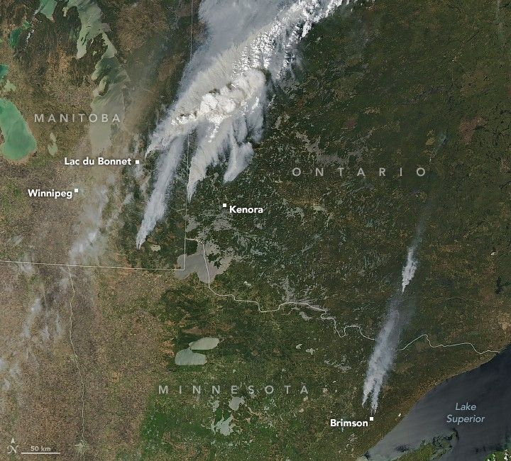

Fires Erupt in North American Forests
Wildland fires broke out in forests along the Manitoba-Ontario border in Canada and in northern Minnesota in the United States in May 2025. Several blazes grew rapidly in size amid hot, dry, and windy conditions in the region.
Smoke from multiple fires drifted hundreds of kilometers across northern forests on the afternoon of May 13, when the MODIS (Moderate Resolution Imaging Spectroradiometer) on NASA’s Aqua satellite captured this image. Some of the largest fires seen here started the previous day and had expanded rapidly by the time this image was acquired. For comparison, the right image shows the same area in false color (MODIS bands 7-2-1) to help distinguish smoke (cyan blue) from clouds (white). Bright red-orange indicates visible fire fronts.
Large smoke plumes billowed from blazes near Lac du Bonnet in eastern Manitoba. One fire close to the rural municipality burned thousands of hectares and threatened infrastructure. Another one, to the northeast near Nopiming Provincial Park, exhibited “extremely volatile fire behavior” on May 13, officials said, and grew to 100,000 hectares (250,000 acres). Authorities closed multiple provincial parks due to the fires and issued evacuation orders for several communities in both Manitoba and Ontario.
In the U.S., multiple fires broke out in northern Minnesota on May 11 and 12. The two largest, Camp House and Jenkins Creek, had burned a combined 7,600 hectares (18,800 acres) about 65 kilometers (40 miles) north of Duluth as of May 13. In and around the town of Brimson, they destroyed more than 100 structures and damaged bridges and roadways, according to news reports.
Unseasonably hot and dry conditions elevated fire risk in the region. Winnipeg, Manitoba, reached 35.2 degrees Celsius (95.4 degrees Fahrenheit) on May 12, topping the previous daily high temperature record set in 1958. Duluth, Minnesota, saw a high temperature of 30°C (86°F) that day, also a new record. Eighty of Minnesota’s 87 counties were under a Red Flag Warning due to the extreme fire danger on May 12.
April and May are typically busy months for wildland fires in the state, said Patty Thielen, forestry director for the Minnesota Department of Natural Resources, in a briefing. However, she noted, the area already burned statewide in 2025 is roughly triple the amount burned in an average year.